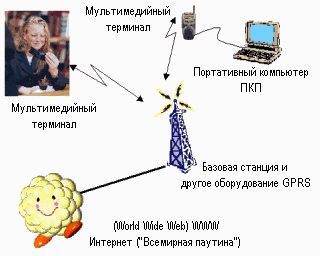

С момента появления сотовой связи идея мобильной передачи данных не давала покоя наиболее продвинутым пользователям мобильных телефонов. С началом бурного развития сети Интернет проблема передачи данных при помощи мобильного телефона стала еще более актуальной, но существовало два основных препятствия на пути ее решения. Первой проблемой является чрезвычайно строгие ограничения скорости передачи, накладываемые системой GSM, которая обеспечивает максимальную скорость передачи 9,6 кбит/с, а при замене отдельных модулей базовых станций - 14,4 кбит/с. Второй проблемой является высокая стоимость передачи данных, поскольку при передаче информации на столь низких скоростях абоненту требуется большое количество времени, которое он должен оплачивать по тарифам, близким к тарифам за услуги голосовой связи. Именно по этим причинам количество абонентов сотовой связи, пользующихся услугой передачи данных, оставалось небольшим. Появление системы пакетной передачи данных GPRS кардинально изменила сложившуюся ситуацию [1-3]. Схема организации GPRS приведена на рис.1.3.

Рис.1.3. Схема GPRS
Передача данных в GSM и GPRS. Передача данных по GSM каналам организована следующим образом: абоненту выделяется отдельный канал, используемый системой для передачи голоса, посредством модема, встроенного в мобильный терминал, происходит передача данных через этот канал, при этом в промежутках между передачей данных канал остается занятым. GPRS (General Packet Radio Service) - это система, которая реализует и поддерживает протокол пакетной передачи информации в рамках сети сотовой связи GSM. При использовании системы GPRS информация собирается в пакеты и передается в эфир, они заполняют те "пустоты" (не используемые в данный момент голосовые каналы), которые всегда есть в промежутках между разговорами абонентов, а использование сразу нескольких голосовых каналов обеспечивает высокие скорости передачи данных. При этом этап установления соединения занимает несколько секунд. В этом и заключается принципиальное отличие режима пакетной передачи данных. В результате у абонента появляется возможность передавать данные, не занимая каналы в промежутках между передачей данных, более эффективно используются ресурсы сети.
Возможности технологии GPRS. GPRS позволит ввести принципиально новые услуги, которые раньше не были доступны. Прежде всего это мобильный доступ к ресурсам Интернета с удовлетворяющей потребителя скоростью, мгновенным соединением и с очень выгодной системой тарификации. Например, при просмотре с помощью системы GPRS WEB-страницы в Интернете, можно изучать содержимое столько, сколько необходимо, поскольку оплата производится только за принятую информацию и не за время нахождения в сети Интернет (не передавая данные, не занимаются каналы сети). При введении повременной оплаты на фиксированных телефонных линиях, тарифы на доступ в Интернет с мобильного GPRS-телефона будут еще более конкурентоспособны.
Технология GPRS позволит быстро передавать и получать большие объемы данных, видеоизображения, музыкальные файлы стандарта MP-3 и другую мультимедийную информацию.
Для тех абонентов, кто уже оценил удобство использования телефонов с WAP - броузером, внедрение технологии GPRS означает практически мгновенную загрузку WAP - страниц на экране телефона и более выгодную систему тарификации.
Для корпоративных пользователей система GPRS может послужить отличным инструментом для обеспечения безопасного и быстрого доступа сотрудников к корпоративным сетям предприятий, к почтовым, информационным серверам, удаленным базам данных. При этом появляется возможность получать доступ к корпоративным сетям даже если абонент находится в сети другого GSM оператора, с которым организован GPRS-роуминг.
Технологии GPRS может применяться в системах телеметрии: устройство может быть все время подключено, не занимая при этом отдельный канал. Такая услуга может быть востребована службами охраны, банками для подключения банкоматов и в других областях, в том числе и промышленных.
Принципы построения системы GPRS. На структурном уровне систему GPRS можно разделить на 2 части: подсистему базовых станций и ядро сети GPRS (GPRS Core Network). В подсистему базовых станций входят все контроллеры и базовые станции системы GSM, которые поддерживают пакетную передачу данных на программном и аппаратном уровне. Ядро сети GPRS включает в себя совершенно новые сетевые элементы, предназначенные для обработки пакетов данных и обеспечения связи с сетью Интернет.
Основным сетевым элементом является пакетный коммутатор - SGSN (Serving GPRS Support Node). Данный сетевой элемент берет на себя все функции обработки пакетной информации и преобразования кадров GSM в форматы, используемые протоколами TCP/IP глобальной компьютерной сети Internet. Пакетный коммутатор призван разгрузить GSM коммутатор, обеспечивая обработку пакетной информации, оставляя обычному коммутатору лишь голосовой трафик.
Вторым важным сетевым элементом является GPRS шлюз - GGSN (Gataway GPRS Support Node). Он обеспечивает связь системы GPRS с пакетными сетями передачи данных: Internet, Intranet, X.25 и др. GGSN содержит всю необходимую информацию о сетях, куда абоненты GPRS могут получать доступ, а также параметры соединения.
Кроме упомянутых элементов в GPRS Core входят другие элементы: DNS (Сервер доменных имен), Charging Gateway (Шлюз для связи с системой тарификации), Border Gateway (Пограничный шлюз) и другие вспомогательные элементы.
Следует отметить широкие возможности масштабирования системы GPRS. При быстром увеличении количества абонентов, пользующихся услугой пакетной передачи данных возможно увеличение емкости системы GPRS за счет расширения или установки дополнительных пакетных коммутаторов (SGSN).При увеличении суммарного объема данных, передаваемых абонентами (при несущественном увеличении числа абонентов), возможна установка дополнительных GPRS - шлюзов, которые обеспечат большую суммарную пропускную способность всей системы, а также расширение системы базовых станций. Таким образом, наращивая систему GPRS, оператор сможет обеспечивать высокое качество услуг, основанных на пакетной передаче данных.
Терминальное оборудование GPRS. Для того, чтобы использовать возможность передачи данных посредством системы GPRS, требуется специальные терминалы, поддерживающие работу в режиме GPRS.
Стандартами определены 3-класса GPRS терминалов:
класс А - терминал позволяет осуществлять одновременно голосовое соединение и работу в режиме GPRS;
класс В - терминал поддерживает и голосовое соединения и передачу данных в пакетном режиме (GPRS), но эти режимы используются не одновременно (во время передачи данных через GPRS абонент не может совершать и принимать голосовые звонки и наоборот);
класс С - терминал обеспечивает только передачу данных в пакетном режиме. Наиболее вероятное исполнение - PCMCIA карта устанавливаемая в портативный компьютер - ноутбук.
Первыми доступными на рынке терминалы были класса B. Эти терминалы поддерживают различные скорости приема и передачи информации. Терминалы класса В с поддержкой GPRS используются в качестве модема для передачи данных и доступа в Интернет (при подключении телефона к компьютеру через порт RS-232 или инфракрасный порт), для приема и передачи SMS (при этом стандартное ограничение на длину короткого сообщения -160 символов будет снято), а также для скоростного доступа к WAP-серверам с экрана своего мобильного телефона.
Скорости передачи в системе GPRS. В сетях, поддерживающих GPRS, предусмотрен поэтапный путь наращивания скорости передачи данных; максимальная реальная скорость приема и передачи, которую на первом этапе сможет поддерживать система GPRS, равна 107 Кбит/с.
Сегодня основные ограничения накладывают абонентские терминалы. Скорость приема и передачи информации, которую может обеспечить мобильный терминал, зависит от количества каналов, которые терминал поддерживает на прием и передачу. Один канал поддерживает передачу информации с максимальной скоростью 13.4 кбит/с. Таким образом, количество каналов, которые будет поддерживать конкретная модель терминала будет определять максимальные возможные скорости, на которых возможна передача и прием информации.
Существующие абонентские терминалы GPRS поддерживают от 2 до 4 каналов для приема информации и до 2 каналов для передачи, что позволяет получить максимальную скорость приема до 53,6 кбит/с и передачи до 26.8 кбит/с. В последующем ожидается появление моделей GPRS терминалов, поддерживающих большее количество каналов (до 7).
При использовании системы пакетной передачи абонент получает и отправляет данные с переменной скоростью, которая определяется условиями распространения сигнала и наличием свободных каналов в пределах заданной соты. При этом динамическое выделение каналов производится исходя из приоритета голосовых каналов, т. е. система автоматически выделяет под пакетную передачу все каналы, не занятые передачей голоса. Таким образом, реальная скорость приема и передачи будет во многом зависеть от загруженности голосовых каналов в пределах каждой конкретной соты.
Перспектива появления новых аппаратов с поддержкой большого количества каналов, а значит, работающих на максимально возможных скоростях передачи данных (до 115 Кбит/с), вызывает определенное беспокойство у некоторых специалистов. Дело в том, что потенциально устройства GPRS при работе на высоких частотах могут выходить за рамки максимально допустимого уровня радиационного излучения. Повторим еще раз, речь идет только о высоких скоростях обмена, поскольку, например, канал GPRS, работающий со скоростью 30-40 Кбит/с (а именно такая скорость нам светит в ближайшем будущем), излучает максимум 0.75 Вт. Это конечно больше, чем фактическое излучение терминала стандарта GSM, но в пределах нормы. Средний уровень мощности излучения еще ниже, поскольку передатчик работает только тогда, когда передаются данные, а в остальное время он выключен. При передаче файла из телефона в базовую станцию передатчик работает постоянно; при передаче текстовых сообщений или во время веб-браузинга он включается редко, что снижает мощность излучения до нескольких милливатт.
Перспективы развития услуг на базе GPRS и пакетной передачи. Появление технология GPRS должно значительно ускорило развитие мобильной передачи данных во всех областях человеческой деятельности. Во многом это связано с появлением новых услуг, развитие которых было затруднено из-за низкой скорости и высокой стоимости передачи данных через голосовые каналы GSM. Технология GPRS позволяет абонентам получать доступ в глобальную сеть из любой точки, где существует покрытие сети, при этом цена такой передачи чрезвычайно привлекательна, а введении повременной оплаты на фиксированных телефонных линиях, тарифы на доступ в Интернет с мобильного GPRS-телефона стали еще более конкурентоспособны.
Для корпоративных пользователей появление услуг на основе технологии GPRS позволило реализацию давней мечты полностью мобильного офиса с доступом как в глобальную, так и в корпоративную сеть своей фирмы, с гарантией безопасного соединения. Практически исчезла проблема доступа к корпоративной сети во время командировок, в том числе и зарубежных, поскольку организация GPRS-роуминга обеспечивает безопасный, дешевый и высокоскоростной доступ к любому ресурсу корпоративной сети. Существуют множество приложений промышленного применения данной технологии для различных задач подвижного мониторинга и контроля состояния объектов.
Следует отметить, что GPRS является идеальным транспортом для WAP-приложений, практически все телефоны с поддержкой GPRS имеют встроенный WAP-броузер, что позволит их владельцам не только передавать данные, но и получать оперативную информацию с различных WAP-серверов.
Перспективы пакетной передачи данных. Система GPRS является первым шагом на пути развития сетей беспроводной пакетной передачи данных. Первоначально услуги на основе GPRS предоставлялись на ограниченной территории действия сотовой связи. В настоящее время зона, где представляются услуги на основе GPRS, расширена до всей территории действия сети сотовой связи. Также увеличены скоростей приема и передачи информации за счет улучшения характеристик мобильных терминалов и инфраструктуры GPRS.
Следующим шагом на пути развития сетей пакетной передачи данных является внедрение технологии EDGE, которая позволяет достичь скорости передачи информации до 385 Кбит/с, при этом базой для развертывания технологии EDGE частично служит система GPRS. Таким образом, был осуществлен плавный переход от систем с коммутацией каналов к системам пакетной передачи данных, которые нашли свою конечную реализацию в системах передачи информации третьего и последующих поколений, позволяющих обеспечить абонентам скорости передачи свыше 2 Мбит/с.
Особенности технологии EDGE. Технология EDGE может внедряться двумя разными способами: как расширение GPRS, в этом случае ее следует называть EGPRS (enhanced GPRS) или как расширение CSD (ECSD). GPRS распространена намного шире, чем HSCSD, поэтому будем рассматривать EGPRS [4-6].
EDGE не является новым стандартом сотовой связи, однако, EDGE подразумевает дополнительный физический уровень, который может быть использован для увеличения пропускной способности сервисов GPRS или HSCSD. В этом случае сами сервисы предоставляются точно так же, как и раньше. Теоретически сервис GPRS способен обеспечивать пропускную способность до 160 Кбит/с (на физическом уровне, на практике же поддерживающие GPRS Class 10 или 4+1/3+2 аппараты обеспечивают лишь до 38-42 Кбит/с и то, если позволяет загруженность сети сотовой связи), а EGPRS — до 384-473,6 Кбит/с. Следует однако при этом использовать новую модуляционную схему, новые методы кодирования каналов и коррекции ошибок.
EDGE, по сути, является «надстройкой» (вернее, подстройкой, если считать, что физический уровень находится ниже остальных) к GPRS и не может существовать отдельно от GPRS. EDGE, как уже было сказано выше, подразумевает использование иных модуляционных и кодовых схем, сохраняя совместимость с CSD-сервисом голосовой связи.
Таким образом, с точки зрения клиентского терминала, внедрение EDGE ничего не изменяет. Однако, инфраструктура базовой станции претерпит некоторые изменения (рис.1.4), хотя и не такие уж серьезные.
Рис.1.4. Отличия между EDGE и GPRS
Помимо увеличения пропускной способности для передачи данных, внедрение EDGE увеличивает емкость сети сотовой связи, так как в один и тот же тайм-слот можно теперь «упаковать» большее количество пользователей, соответственно, можно надеяться не получать сообщение «сеть занята» в самые неподходящие моменты.
Табл.1.1. иллюстрирует разные технические характеристики EDGE и GPRS. Хотя и в EDGE, и в GPRS в единицу времени отправляется одинаковой число символов, благодаря использованию другой модуляционной схемы, число бит данных в EDGE втрое больше.
Таблица1.1
Сравнительные характеристики EDGE и GPRS
|
|
GPRS |
EDGE |
|
Модуляционная схема |
GMSK |
8-PSK/GMSK |
|
Скорость передачи символов |
270 тыс. в секунду |
270 тыс. в секунду |
|
Пропускная способность |
270 Кбит/с |
810 Кбит/с |
|
Пропускная способность на тайм-слот |
22,8 Кбит/с |
69,2 Кбит/с |
|
Скорость передачи данных на тайм-слот |
20 Кбит/с (CS4) |
59,2 Кбит/с (MCS9) |
|
Скорость передачи данных с использованием 8 тайм-слотов |
160 (182,4) Кбит/с |
473,6 (553,6) Кбит/с/s |
Сразу оговоримся здесь, что приведенные в таблице значения пропускной способности и скорости передачи данных отличаются друг от друга из-за того, что в первой также учитываются заголовки пакетов, пользователю ненужные. Ну, а максимальная скорость передачи данных в 384 Кбит/с (требуемая для соответствия спецификациям IMT-2000) получается в том случае, если используется восемь тайм-слотов, то есть, на каждый тайм-слот приходится по 48 Кбит/с.
Модуляционная схема EDGE. В стандарте GSM применяется модуляционная схема GMSK (Gaussian minimum shift keying, кодирование по сдвигу Гауссового минимума), являющейся разновидностью фазовой модуляции сигнала. Для пояснения принципа схемы GMSK рассмотрим фазовую диаграмму рис.1.5, на которой изображена действительная (I) и мнимая (Q) часть комплексного сигнала. Фаза передаваемых логических «0» и «1» отличаются друг от друга фазой π. Каждый передаваемый в единицу времени символ соответствует одному биту.
Рис.1.5 Разные модуляционные схемы в GPRS и EDGE
В технологии EDGE применяется модуляционная схема 8PSK (8-phase shift keying, сдвиг фазы, как видно из рисунка, равен π/4), используя все те же спецификации структуры частотных каналов, кодирования и ширины полос, как в GSM/GPRS. Соответственно, соседние частотные каналы создают ровно те же взаимные помехи, как и в GSM/GPRS. Меньший сдвиг фазы между символами, в которые теперь кодируется не один бит, а три (символы соответствует комбинациям 000, 001, 010, 011, 100, 101, 110 и 111), делает задачу детектирования сложнее, особенно если уровень сигнала невысок. Впрочем, в условиях хорошего уровня сигнала и стабильного приема, дискриминировать каждый символ не составляет большого труда.
Кодирование. В GPRS возможно применение четырех разных схем кодирования: CS1, CS2, CS3 и CS4, в каждой из которых используется свой алгоритм коррекции ошибок. Для EGPRS разработано девять схем кодирования, MCS1..MCS9, соответственно, назначение которых также в обеспечении коррекции ошибок. Причем в «младших» MSC1..MSC4 используется модуляционная схема GMSK, в «старших» MSC5..MSC9 — модуляционная схема 8PSK.
Характеристики кодовых схем EGPRS приведены в таблице 1.2, а на рисунке 1.6. представлена зависимость скорости передачи данных от использования разных модуляционных схем вкупе с разными схемами кодирования (скорость передачи данных меняется в зависимости от того, как много требуемой для работы алгоритмов коррекции ошибок избыточной информации закладывается в каждый кодируемый пакет). Нетрудно догадаться, что чем хуже условия приема (отношение сигнал/шум), тем больше приходится закладывать избыточной информации в каждый пакет, а значит, тем меньше скорость передачи данных. Небольшое отличие в скорости передачи данных, наблюдаемое между CS1 и MCS1, CS2 и MCS2, и т. д., связано с разницей в величине заголовков пакетов.
Таблица 1.2
Характеристики кодовых схем EGPRS
|
Схема кодирования (MCS) |
Скорость (кбит/с/слот) |
Модуляция |
|
MCS-1 |
8.8 |
GMSK |
|
MCS-2 |
11.2 |
GMSK |
|
MCS-3 |
14.8 |
GMSK |
|
MCS-4 |
17.6 |
GMSK |
|
MCS-5 |
22.4 |
8-PSK |
|
MCS-6 |
29.6 |
8-PSK |
|
MCS-7 |
44.8 |
8-PSK |
|
MCS-8 |
54.4 |
8-PSK |
|
MCS-9 |
59.2 |
8-PSK |
Рис.1.6. Разные кодовые схемы в GPRS и EDGE.
Впрочем, если соотношение сигнал/шум невелико, не все потеряно: в старших модуляционно-кодовых схемах EGPRS MCS7, MCS8, MCS9 предусмотрена процедура «наложения»: так как стандарт способен отправлять группы пакетов на разных несущих (внутри частотного диапазона), для каждой из которых условия (и прежде всего — «зашумленность») могут быть разными, в этом случае повторной передачи всего блока можно избежать, если знать, в какой группе произошел сбой и повторно транслировать именно эту группу. В отличие от старшей кодовой схемы GPRS CS4, где не используется аналогичный алгоритм коррекции ошибок, в EGPRS MCS7, MCS8, MCS9 разные блоки данных «накладываются» друг на друга, поэтому при сбое в одной из групп (как показано на рисунке), повторной пересылке подлежит лишь половина пакетов (рис.1.7).
Рис.1.7.
Использование наложения групп пакетов
в EDGE.
Обработка пакетов. Если по каким-то причинам пакет, отправленный с использованием «старших» схем кодирования, не был корректно принят, EGPRS позволяет его ретранслировать заново с использованием «пониженной» кодировочной схемы. В GPRS такой возможности, названной «ресегментацией» (resegmentation), предусмотрено не было: некорректно принятый пакет отправляется вновь по той же модуляционно-кодировочной схеме, что и в предыдущий раз.
Окно адресации (addressing window).Прежде чем последовательность кодированных (то есть, в которые закодированы «слова», состоящие из нескольких бит) пакетов (фрейм) может быть передана по радиочастотному интерфейсу, передатчик присваивает пакетам идентификационный номер, включенный в заголовок каждого пакета. Номера пакетов в GPRS составляют от 1 до 128. После того, как последовательность пакетов (например, 10 штук) отправлена адресату, передатчик ждет от приемника подтверждения того, что они были приняты. В отчете, который приемник отправляет обратно передатчику, содержатся номера пакетов, которые были успешно декодированы, и которые получатель декодировать не смог. Важный нюанс: номера пакетов принимают значения от 1 до 128, а ширина адресного окна — всего 64, вследствие чего вновь передаваемый пакет может получить такой же номер, как в предыдущем фрейме. В этом случае протокол вынужден повторно отправлять весь текущий фрейм, что отрицательно сказывается на скорости передачи данных в целом. Для снижения риска возникновения такой ситуации в EGPRS номер пакета может принимать значения от 1 до 2048, а адресное окно увеличено до 1024.
Точность измерения. Для обеспечения корректного функционирования технологии GPRS в среде GSM приходится постоянно измерять радиоусловия: уровень сигнал/шум в канале, частоту появления ошибок и т. п. Эти измерения никак не сказываются на качестве голосовой связи, где достаточно постоянно использовать одну и ту же кодировочную схему. При передаче данных в GPRS измерение радиоусловий возможно лишь в «паузах» — дважды за период 240 мс. Для того, чтобы не ждать каждые 120 мс, EGPRS определяет такой параметр, как вероятность возникновения ошибки на бит (BEP, bit error probability), в каждом фрейме. На величину BEP влияет как отношение сигнал/шум, так и временная дисперсия сигнала и скорость перемещения терминала. Изменение BEP от фрейма к фрейму позволяет оценить скорость терминала и «дрожание» частоты, но для более точной оценки используется среднее значение вероятности ошибки на бит на каждые четыре фрейма и его выборочное стандартное отклонение. Благодаря этому, EGPRS быстрее реагирует на изменения условий: увеличивает скорость передачи данных при снижении BEP и наоборот.
Контроль за скоростью соединения в EGPRS. В EGPRS используется комбинация двух подходов: подстройки скорости соединения и инкрементной избыточности. Подстройка скорости соединения, измеряемой либо мобильным терминалом по количеству принимаемых в единицу времени данных, либо базовой станцией по количеству, соответственно, передаваемых данных, позволяет выбрать оптимальную модуляционно-кодовую схему для последующих объемов данных. Обычно, использование новой модуляционно-кодовой схемы может быть назначено при передаче нового блока (по четыре группы) данных.
Инкрементная избыточность изначально применяется для самой старшей модуляционно-кодовой схемы, MCS9, с незначительным вниманием к коррекции ошибок и без учета условий радиосвязи. Если информация декодируется адресатом некорректно, по каналу связи передаются не сами данные, а некий контрольный код, который «добавляется» (используется для преобразования) к уже загруженным данным до тех пор, пока данные не будут декодированы успешно. Каждый такой «инкрементный кусочек» дополнительного кода увеличивает вероятность успешной расшифровки переданных данных — в этом и заключается избыточность. Главным преимуществом этого подхода является то, что здесь нет необходимости следить за качеством радиосвязи, поэтому инкрементная избыточность является обязательной в стандарте EGPRS для мобильных терминалов.
Интеграция EGPRS в существующие GSM/GPRS. Как уже было сказано выше, главное различие между GPRS и EGPRS — в использовании иной модуляционной схемы на физическом уровне. Поэтому для поддержки EGPRS достаточно установки на базовой станции поддерживающего новые модуляционные схемы трансивера и программного обеспечения для обработки пакетов. Для обеспечения совместимости с не поддерживающими EDGE мобильными телефонами, в стандарте прописано следующее:
поддерживающие и не поддерживающие EDGE мобильные терминалы должны быть способны использовать один и тот же тайм-слот;
поддерживающие и не поддерживающие EDGE трансиверы должны использовать один и тот же частотный диапазон;
возможна частичная поддержка EDGE;
для облегчения процесса внедрения на рынок новых мобильных телефонов подразделяют EDGE - совместимые терминалы на два класса: поддерживающие модуляционную схему 8PSK только в приемном потоке данных (downlink) и поддерживающие 8PSK как в приемном, так и в передающем (uplink) потоке данных.
Внедрение EGPRS позволяет достичь пропускной способности, примерно втрое больше, чем в технологии GPRS. При этом используется в точности такие же профили QoS (quality of service, качество сервиса), как в GPRS, но с учетом увеличившейся пропускной способности. Помимо необходимости установки трансивера на базовой станции, для поддержки EGPRS обновляется программное обеспечения, которое обрабатывает измененный протокол передачи пакетов.
Таким образом, технология EDGE обеспечивает качественное улучшение радиоинтерфейса без существенных изменений существующих стандартов сетей второго поколения, т.е. EDGE предоставляет те же услуги, что и GPRS, как, например, получить доступ к ресурсам Интернета, получать и отправлять сообщения электронной почты, скачивать картинки, мелодии, игры и видеофайлы с WAP-сайтов, обмениваться MMS-сообщениями в несколько раз быстрее, чем через GPRS, а также новые услуги реального времени, как IP-телефония, мобильное телевидение и он-лайн приложения (игры), и является следующим качественным шагом на пути построения и введения нового (третьего) поколения мобильных сетей.